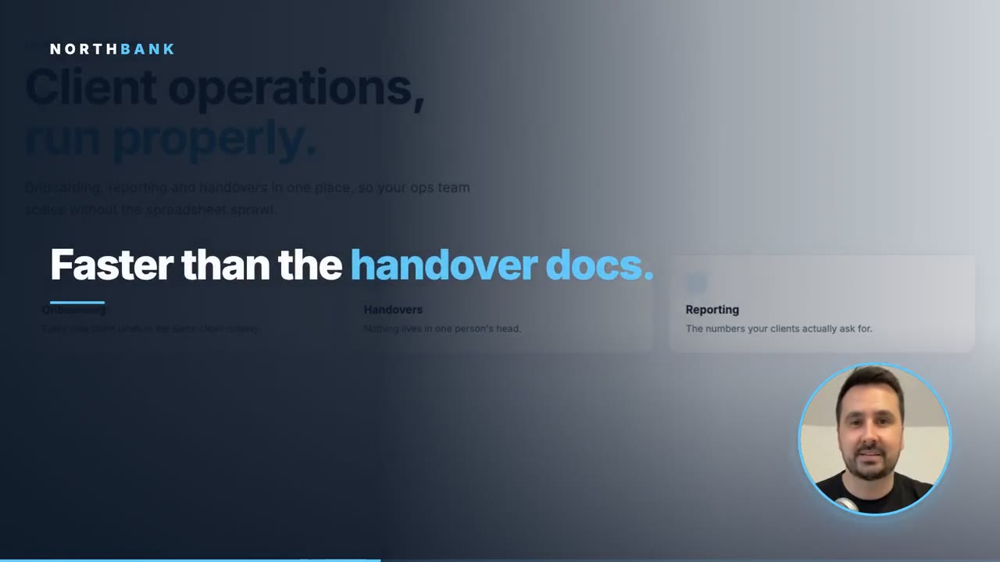

Type your email. Watch your video build itself.
One recording of you becomes a personalised sales video, on a page of their own, for every person on your list.

Your company You
Pick one to jump straight to it
No spam, ever. One preview only, made with an AI version of our founder’s face and voice.
Would you phone someone who’s just watched a video of your face?
They would. That is the whole machine: they watch, you know the second they do, and you call warm instead of cold. You approve every video before any of it sends.
Clients we’ve built for


The send they delete.
The send they watch.
Same prospect, same list. The only thing that changes is what lands. Drag the line.
Hi {{first_name}},
I noticed {{company}} might be a good fit for what we do. Got 15 minutes this week?
We work with a lot of businesses in {{industry}} and thought it was worth reaching out.
calendly.com/rep-team/15min
Unsubscribe · Sent to your whole industry
Hi Priya,
I noticed Northbank might be a good fit for what we do. Got 15 minutes this week?
calendly.com/rep-team/15min
Unsubscribe · Sent to your whole industry
A deleted template costs more than the send: “never contact me again” closes that account for good. The send they watch comes from the founder.
Turn a cold list into a warm list.
It doesn’t look, sound or feel like a template. It lands with their name on it, opens on a page built for them, and tells you who is worth the call.
Priya, we made you something. Have a look when you get a minute.
Her name and her company are on it in the first three seconds, before anyone clicks.
Their brand, their name, and the video sitting on it. Not a template with the nouns swapped.
You chase the warm ones, not the whole list.
It is your face. You sign off before it is built.
The clone is built from one recording session you book, and used only for your outreach. Between that session and anything being built, there are three hard stops.
You approve the list
We build and enrich your data, then you check it over before a single video exists.
You approve the page
One real page for one real prospect. If it is not right, nothing else gets made.
You approve the full run
We build three more pages so you can see it personalise, and nothing sends until you say go.
What do you want more of?
Pick one and watch how a personalised video gets made, sent and tracked. All four run the same way underneath.
- What goes in: a list you already have. We write and build each video; you approve them before any of it sends.
- What comes out: one video per person, each one naming them and their company. You film once; your face and voice are rebuilt for every one after that.
- Where it lands: you send one link; it opens on a page of her own.
- What comes back: who watched, and how far, so you know who is worth a call.
People buy from people. Make sure yours is the first face they see.
Everyone else is sending templates. You’re about to send yourself: try the live demo above, or skip straight to a conversation.